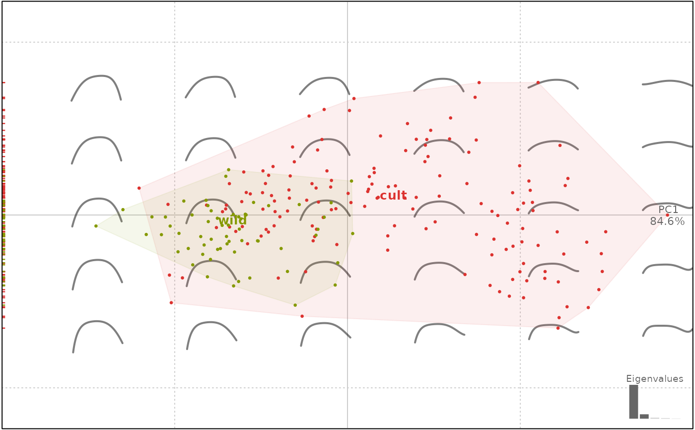
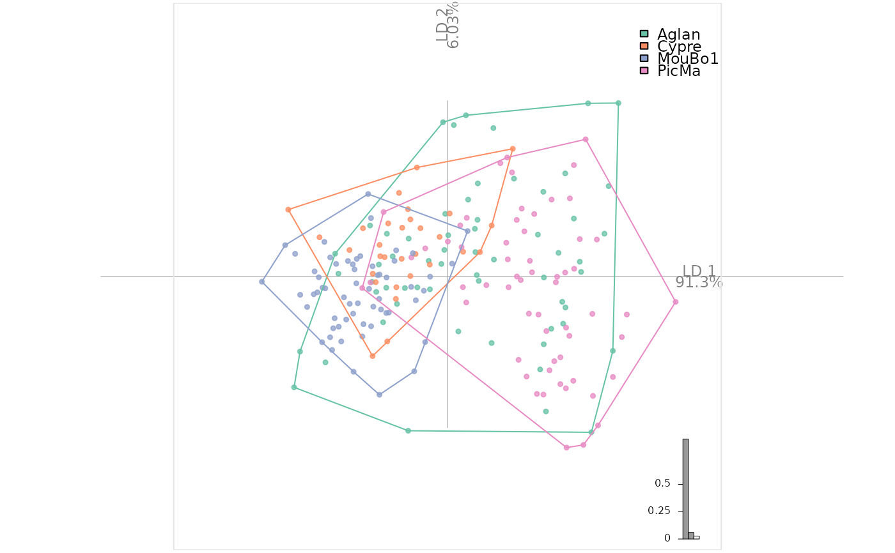

In Momocs, Opn classes objects are
lists of open outlines, with optionnal components,
on which generic methods such as plotting methods (e.g. stack)
and specific methods (e.g. npoly can be applied.
Opn objects are primarily Coo objects.
Opn(x, fac = dplyr::data_frame(), ldk = list())
Arguments
| x |
|
|---|---|
| fac | (optionnal) a |
| ldk | (optionnal) |
Value
an Opn object
See also
Examples
#> [1] add_ldk combine coo_bookstein coo_sample_prop #> [5] coo_sample coo_slice coo_smoothcurve def_ldk_angle #> [9] def_ldk_direction def_ldk_tips def_ldk dfourier #> [13] fgProcrustes get_ldk mosaic npoly #> [17] opoly panel pile rearrange_ldk #> see '?methods' for accessing help and source code# we load some open outlines. See ?olea for credits olea#> Opn (curves) #> - 210 curves, 99 +/- 3 coords (in $coo) #> - 4 classifiers (in $fac): #> # A tibble: 210 x 4 #> var domes view ind #> <fct> <fct> <fct> <fct> #> 1 Aglan cult VD O10 #> 2 Aglan cult VL O10 #> 3 Aglan cult VD O11 #> 4 Aglan cult VL O11 #> 5 Aglan cult VD O12 #> 6 Aglan cult VL O12 #> # … with 204 more rows #> - also: $ldkpanel(olea)#># we print the Coe op#> An OpnCoe object [ opoly analysis ] #> -------------------- #> - $coe: 210 open outlines described #> - $baseline1: (-0.5; 0), $baseline2: (0.5; 0) #> # A tibble: 210 x 4 #> var domes view ind #> <fct> <fct> <fct> <fct> #> 1 Aglan cult VD O10 #> 2 Aglan cult VL O10 #> 3 Aglan cult VD O11 #> 4 Aglan cult VL O11 #> 5 Aglan cult VD O12 #> 6 Aglan cult VL O12 #> # … with 204 more rows#>#>#># for CV table and others olda#> * Cross-validation table ($CV.tab): #> classified #> actual Aglan Cypre MouBo1 PicMa #> Aglan 21 2 17 20 #> Cypre 12 4 14 0 #> MouBo1 4 2 54 0 #> PicMa 22 1 2 35 #> #> * Class accuracy ($CV.ce): #> Aglan Cypre MouBo1 PicMa #> 0.3500000 0.1333333 0.9000000 0.5833333 #> #> * Leave-one-out cross-validation ($CV.correct): (54.3% - 114/210):plot_LDA(olda)